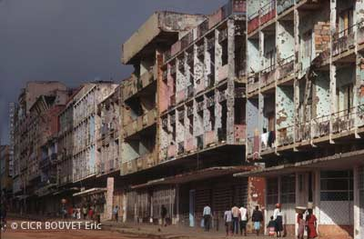

LES PRINCIPES GENERAUX REGLEMENTANT L’EMPLOI DES ARMES

Lorsqu’il n’y a pas de convention spécifique règlementant l’usage d’une arme, elle sera considérée comme illicite au regard du DIH si, par nature, elle cause :
des effets indiscriminés ;
des maux superflus ;
des dommages graves à l’environnement.
1) Les armes qui causent des effets indiscriminés
Une arme qui, par sa nature, ne peut être dirigée contre un objectif militaire précis ou dont les effets ne peuvent être limités à un objectif militaire précis et frappe par conséquent indistinctement des objectifs militaires et des personnes civiles ou des biens de caractère civil est interdite.
Exemples :
les armes chimiques, les armes bactériologiques, les mines anti-personnel, etc.
2) les armes qui causent des maux superflus
Une arme qui, par sa nature, cause des souffrances inutiles est interdite. La difficulté concernant ce principe est sa nature nécessairement subjective. Qu’est-ce qu’un mal superflu en situation de guerre ? La question n’est pas simple et les avis sont partagés. Les maux superflus peuvent être considérés de deux manières :
- soit, il s’agit de maux excessifs par rapport à l’avantage militaire recherché ;
- soit, il s’agit de maux excessifs par rapport au mal que subit la victime pour être mise hors de combat.
Exemples :
Les balles dum-dum, les poisons pour lesquels il n’y a aucun remède, etc.
3) les armes qui causent des dommages graves à l’environnement
Il est interdit d'utiliser des moyens de guerre qui sont conçus pour causer, ou dont on peut attendre qu'ils causent, des dommages étendus, durables et graves à l'environnement naturel.
Exemples :
gaz orange, napalm, etc.
| Sources |
- Déclaration de Saint-Pétersbourg, 1968 – préambule
- Convention des Nations Unies sur l’interdiction d’utiliser des techniques de modification de l’environnement à des fins militaires ou toutes autres fins hostiles, 1976
- The SIRUS project, « Toward a determination of which weapons cause superfluous or unnecessary suffering », ed. by R.M. COUPLAND, Geneva, ICRC, 1997
- Droit international coutumier:
- règle 70 : interdiction des maux superflus
- règle 71 : interdiction des effets indiscriminés
- règle 45 : protection de l’environnement